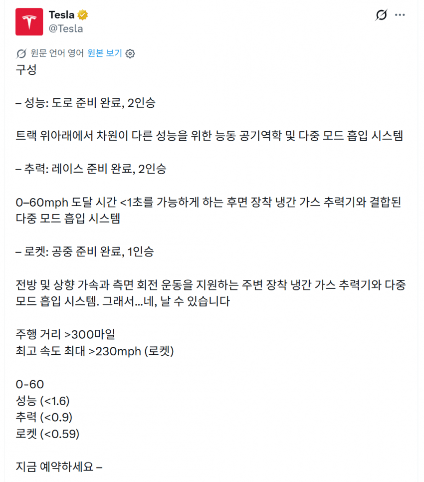

퍼포먼스(2인승) : 1.6초
쓰러스터(2인승) : 0.9초
로켓(1인승) : 0.6초
시발 일론 미친놈아 차를 만들라니까 로켓에 바퀴를 달면 어떻게 해

퍼포먼스(2인승) : 1.6초
쓰러스터(2인승) : 0.9초
로켓(1인승) : 0.6초
시발 일론 미친놈아 차를 만들라니까 로켓에 바퀴를 달면 어떻게 해
기절해서 아무 느낌 없을듯ㅋㅋㅋ
1.6초도 미쳤는데 0.6초는 ㅋㅋㅋㅋㅋ
제로백0.6초면 날개만 달면 이륙할수있는거 아녀??
착륙기술을 도입한 이유ㄷㄷㄷ
근데 생각해보니까 저거 도는건 일반 운전자가 버틸수 있냐? ㅋㅋㅋㅋㅋ 급상승에 이은 회전 착지인데 ㅋㅋㅋㅋㅋ
대포차폭주뛰는애들 환장하겠네ㅋㅋㅋ
??
타이어가 버텨..?
타이어가 버터됨

0.6초는 진짜 무슨느낌일까? ㅋㅋㅋㅋㅋㅋㅋ